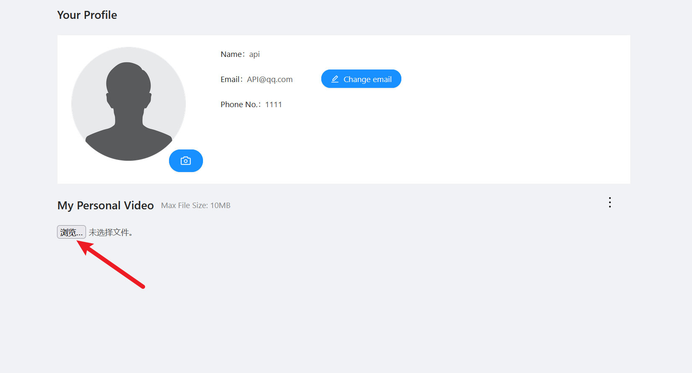
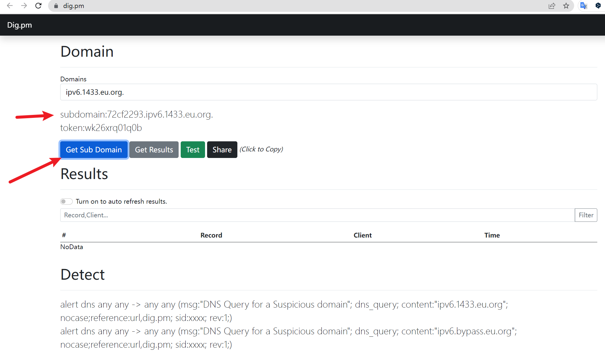
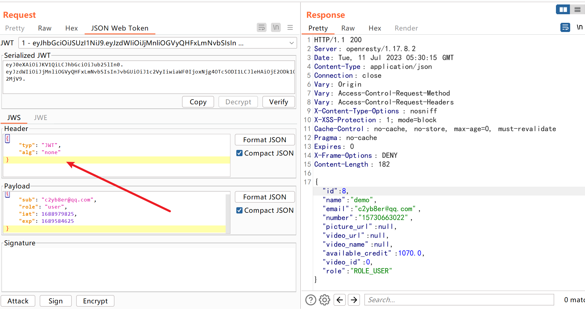
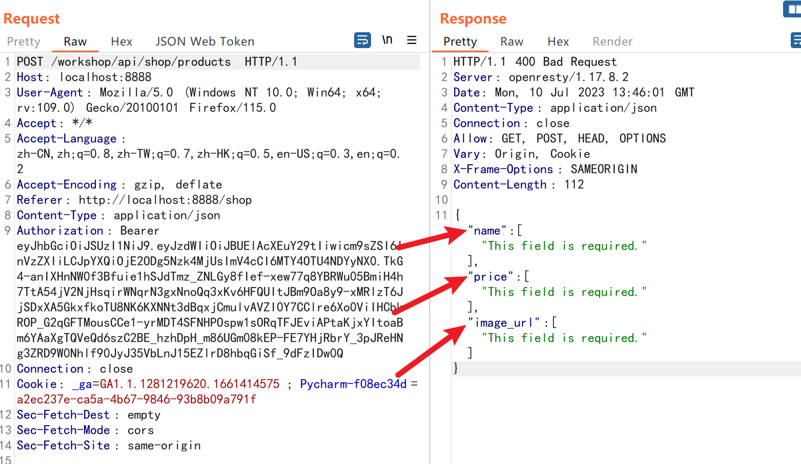

API安全
靶场搭建
- 靶场下载地址(我fork了一份)
- docker安装，笔者是用的wsl+docker.
lab0:初始账户
- 注册一个账户，邮箱为API@qq.com，密码为Admin@123
- 登陆后访问对应IP的8025端口，接收邮件获取车辆信息。
lab1:访问其它用户车辆的详细信息
登录后首先找到泄露其它用户的车辆 id的接口。进入论坛主页点击某一个论坛文章发现此时的URL为：
于是试着抓一下包，看能返回什么，可以看到已经返回了该用户的意思信息：
进一步我们猜测一下直接抓论坛首页试试：
在这里我们就得到了demo用户的
vehicleid信息要查车辆信息，现在我们只有Dashboard页面存在车辆信息，我们尝试抓包这个页面,抓了下首页发现是应该根据我们当前用户的Cookie来返回的，我们再找找有没有其他地方：
我们将其替换为demo用户的vehicleid信息54e7994a-e14e-4ee6-a46d-235ca3fd0eed
lab2:访问其它用户的机械报告
在提交的Json数据中发现危险数据：
1 | "report_link":"http://localhost:8888/workshop/api/mechanic/mechanic_report?report_id=9" |
这个数据返回了报告的地址，通过修改report_id，我们可以越权访问他人的数据：
lab3: 重置其它用户的密码
退出登录，点击忘记密码，输入API@qq.com，点击Sent OTP，在后台查看验证码只有四位，于是准备爆破
填写表单，密码修改为Admin@456，提交抓包查看：
多交几次看看有没有限制爆破：
由于是API的靶场，我们试试换个API的版本试试：
开始着手爆破，选择狙击手模式即可，导入我们从0到9999的字典开始爆破：
可以看到原来的密码已经不能登录了：
lab4: 找到泄露其它用户敏感信息的API接口
同lab1中的论坛页面信息泄露
lab5: 找到泄露视频内部属性的API接口
感觉这个接口比较鸡肋
懒得按这个按钮才弹出的上传视频选项，于是我选择修改前端删掉hidden部分就可以：

lab6: 使用 “contact mechanic” 功能完成第7层DoS
在提交的Json数据中发现危险数据：
1 | "repeat_request_if_failed":false, |
我们尝试修改，再重新提交：
1 | "repeat_request_if_failed":true, |
lab7:删除另一个用户的视频
这个API危害挺大
还是lab5处的抓包，我们修改一下协议，把PUT修改为OPTIONS
HTTP中的OPTIONS方法是一种用于获取目标资源所支持的HTTP方法列表的请求方法。它允许客户端向服务器查询对特定资源所支持的请求方法，以确定在不实际发送请求的情况下，可以对该资源执行哪些操作。
OPTIONS请求的主要用途包括：
- CORS（跨域资源共享）：在进行跨域请求时，浏览器会首先发送一个OPTIONS请求，以确定服务器是否允许发送实际的跨域请求。服务器可以通过返回特定的响应头（如Access-Control-Allow-Methods）来指示允许的请求方法。
- 服务器功能查询：客户端可以使用OPTIONS请求向服务器查询特定资源支持的HTTP方法列表。这对于动态确定可以执行的操作非常有用，可以根据服务器返回的允许的方法列表来自适应地构建请求。
- API文档和发现：OPTIONS方法还可以用于提供API文档和服务发现功能。通过在OPTIONS响应中包含有关资源的元数据，例如支持的方法、请求头等信息，客户端可以获得有关API的更多信息，以便正确使用和调用API。
- GET：用于从服务器获取资源。客户端发送一个GET请求来获取指定URI的资源。GET请求是幂等的，即多次发送相同的GET请求应该返回相同的响应。
- POST：用于向服务器提交数据，创建新资源或触发服务器的处理操作。POST请求将数据作为请求体发送给服务器，通常用于提交表单数据、上传文件等。
- PUT：用于向服务器更新或替换资源。PUT请求将请求体中的数据保存到服务器上指定的URI位置。如果URI不存在，则可以创建新资源；如果URI已存在，则将其替换为请求的内容。
- DELETE：用于删除服务器上的资源。DELETE请求用于删除指定URI的资源。
- OPTIONS：用于获取目标资源所支持的HTTP方法列表。OPTIONS请求允许客户端查询服务器对特定资源支持的请求方法，以确定可以对该资源执行哪些操作。
- HEAD：与GET方法类似，但不返回响应体，仅返回响应头。HEAD请求用于获取关于资源的元数据，例如响应头中的信息，而无需传输整个响应体。
- PATCH：用于对服务器上的资源进行局部更新。PATCH请求仅对资源进行部分修改，而不是替换整个资源。
除了上述方法外，HTTP/1.1 规范还定义了其他一些请求方法，如：
- TRACE：用于在请求往返的路径上执行一个追踪。它通常用于诊断和调试，以确定请求如何通过代理服务器和中间节点传输。
- CONNECT：用于建立与目标主机的隧道连接，通常用于通过代理服务器建立安全的HTTPS连接。
权限不足说明需要用admin的身份：
后续通过修改videos/后的ID可以实现任意视频的删除
lab8: 免费获得一件物品
点击后抓包：
修改请求方式为GET：
我们可以敏锐地观察到返回的Json数据中有一个status数据，明显表示着已经订购的信息。回到购买界面，我们看到还有Return按钮，我们点击后抓包看看：
直接切换成GET请求爆出了无权使用的消息，不慌张我们试试尝试着先把这个货品退回再用之前的方式利用order_id进行查看，发现状态确实发生了改变。
这里我们大胆猜想退回的状态就是returned进行修改试试，注意由于status是原来就有的数据，所以这里我们需要用PUT协议进行提交而不是POST协议：
PUT和POST是HTTP请求方法，用于向服务器提交数据。它们在语义和使用场景上有以下区别：
- 目的：POST用于向服务器提交数据，请求服务器对数据进行处理。通常用于创建新资源、提交表单数据、发送评论等。PUT用于向服务器更新或替换指定URI的资源。如果URI不存在，则可以创建新资源；如果URI已存在，则将其替换为请求的内容。
- 幂等性：POST请求不是幂等的，即多次发送相同的POST请求可能会产生不同的结果。每次发送POST请求，服务器可能会创建新的资源、执行不同的操作或返回不同的响应。PUT请求是幂等的，即多次发送相同的PUT请求应该产生相同的结果。每次发送PUT请求，服务器应该将请求的内容保存在指定的URI位置，因此多次请求会更新或替换相同的资源。
- 数据位置：POST请求将数据包含在请求体中发送给服务器。数据的格式可以是表单数据、JSON、XML等。PUT请求也将数据包含在请求体中，但是它通常用于指定URI位置的资源，并将请求的内容保存在该位置。
- 资源标识：POST请求通常由服务器决定资源的标识，并返回新资源的标识符（如生成的ID）。PUT请求通常由客户端指定资源的标识，即URI中的位置。
总结来说，POST用于提交数据进行处理，通常用于创建新资源或执行操作，而PUT用于更新或替换指定URI的资源。POST请求不是幂等的，而PUT请求是幂等的。根据具体的应用场景和资源操作需求，选择适当的请求方法来进行数据提交和资源更新。
从返回的数据可以看到已经修改成功了，也就是说我们空少套白狼了4个椅子
lab9:将您的结余增加1000元或以上
同样地利用上面的API，因为我们发现数据不仅可以提交status还可以提交quantity。
先将quantity改为100，status改为delivered，这样我们就可以不花钱就点了100个价值10元的椅子
然后修改状态为returned，就可以退钱！！！🤑
lab10: 更新内部视频属性
同lab5的抓包，我们可以看到返回的Json数据有如下几种：
1 | "id":32, |
所以我们需要更改的话就使用PUT协议，在请求的Json数据中指定就好。
lab11: 让crAPI发送一个HTTP调用到“www.baidu.com” 并返回 HTTP响应
同lab2接口与抓包，抓包后我们在请求信息中发现了关键信息：
1 | "mechanic_api":"http://localhost:8888/workshop/api/mechanic/receive_report", |
我们猜想，把这个地址改为www.baidu.com就能实现lab。
为了验证这个猜想，我们使用DNSlog进行验证，使用工具：https://dig.pm/
DNSlog是一种用于收集和分析DNS查询的日志的技术和工具。在网络通信中，DNS（Domain Name System）用于将域名解析为对应的IP地址。DNSlog通过设置恶意DNS服务器或域名来截获应用程序或系统发出的DNS查询请求，并将查询信息记录到日志中。
DNSlog注入是一种利用应用程序对DNS查询结果的处理不当而导致的安全漏洞。它通常发生在应用程序通过DNS查询获取动态资源时，没有对返回的DNS响应进行充分的验证和过滤。攻击者可以通过构造恶意的DNS查询请求，将恶意内容注入到应用程序的响应中，从而实现攻击目的。

复制subdomain并加上http://后替换mechanic_api的值
lab12: 想办法在不知道优惠券代码的情况下获得免费优惠券
先找到输出优惠卷代码的接口，进行抓包查看数据：
查了一下文档，考点是NoSQL Injection，之前都学的是SQL注入基于MySQL的这里来个NoSQL给我整不会了，先学一下NoSQL的基本知识：
NoSQL注入（NoSQL Injection）是一种攻击技术，针对使用NoSQL数据库的应用程序而言，类似于传统SQL注入攻击。NoSQL注入利用了应用程序对用户输入数据的处理不当，以执行未授权的操作或绕过访问控制。
NoSQL数据库与传统关系型数据库不同，其查询语言和数据存储机制也不同。然而，一些NoSQL数据库仍然需要处理用户提供的数据，如查询参数、过滤条件等。如果应用程序没有正确验证和过滤这些用户输入数据，就可能存在NoSQL注入漏洞。
NoSQL注入攻击的原理是攻击者通过在应用程序发送给NoSQL数据库的查询中注入恶意的数据，以干扰查询的逻辑。攻击者可以利用以下方法进行注入攻击：
- 注入查询语句：攻击者通过在查询中注入恶意操作符、查询语句或特殊字符，来修改查询的逻辑，获取敏感数据或执行未授权的操作。
- 绕过访问控制：攻击者可以通过注入特定的查询条件来绕过应用程序的访问控制机制，获取未授权的数据或执行特权操作。
- 盲注入：在一些情况下，应用程序可能没有直接将查询结果返回给用户，而是根据查询的结果来进行后续操作。攻击者可以通过注入特定的查询条件，观察应用程序的行为差异，从而推断出查询的结果或执行特定操作。
NoSQL（Not Only SQL）是一类非关系型数据库，与传统的关系型数据库（如MySQL、Oracle）相对应。NoSQL数据库设计的初衷是解决关系型数据库在大规模数据存储和高并发访问方面的局限性。
NoSQL数据库采用了不同的数据模型和存储机制，以满足特定的应用需求。与传统关系型数据库使用表格结构和SQL查询语言不同，NoSQL数据库通常采用以下数据模型之一：
- 键值存储（Key-Value Stores）：使用简单的键值对结构存储数据，通过唯一的键来访问数据。例如，Redis、DynamoDB。
- 文档存储（Document Stores）：以类似JSON或XML的文档格式存储数据，每个文档都有唯一的标识符。例如，MongoDB、CouchDB。
- 列族存储（Column Family Stores）：将数据组织为列族的形式，每个列族包含不同的列和行。例如，HBase、Cassandra。
- 图形数据库（Graph Databases）：用于处理图形结构数据，其中节点和边表示实体和它们之间的关系。例如，Neo4j、JanusGraph。
NoSQL数据库具有以下特点和优势：
- 可扩展性：NoSQL数据库通常具有良好的横向扩展性，可以轻松处理大规模数据和高并发访问。
- 灵活的数据模型：NoSQL数据库提供了灵活的数据模型，适应不同类型和结构的数据，无需事先定义严格的表格结构。
- 高性能：由于去除了复杂的关系模型和复杂的查询语言，NoSQL数据库可以实现更高的读写性能。
- 弱一致性：一些NoSQL数据库采用了弱一致性模型，允许数据在不同节点之间存在一定的延迟和不一致性，以提高性能和可用性。
- 分布式架构：NoSQL数据库常用于分布式环境中，数据可以在多个节点上进行分布和复制，提供高可用性和容错性。
我们在这里使用了两个数据库软件分别是Postgresdb和Mongodb，通过我们之前的响应信息的Json格式可以判断。但是这里的Postgresdb常简称为Postgres）是一个开源的关系型数据库管理系统（RDBMS），而不是NoSQL数据库。
经过查阅docker的日志，很神奇我并没有使用这个db，可能是我们的模块暂未使用它吧。
故我们只需要面对Mongodb进行NoSQL注入就行了
原本的Json提交数据是：
1 | {"coupon_code": "1234"} |
这表示MongoDB将搜索集合中满足查询条件的文档，并返回结果集中包含”coupon_code”字段值为”1234”的文档。
在学习了最基本的NoSQL注入的语句和Mongodb数据的结构后我构造了payload:
1 | {"coupon_code": {"$ne": "hacked by c2yb8er"}} |
这个查询条件的意思是，查找”coupon_code”字段值不等于hacked by c2yb8er的文档。
其中$ne操作符表示不等于的意思
lab13: 找到一种通过修改数据库来兑换已经领取的优惠券的方法
有点疑惑，实战的时候找不到这种文档怎么办？
查看文档发现一个接口/workshop/api/shop/apply_coupon
我很懵逼，为什么我明明用的Mongodb，不应该是NoSQL注入吗？这里为什么来了一个MySQL中的字符型注入？查阅一下相应代码，真相水落石出了！
1 | class ApplyCouponView(APIView): |
注入点是这段代码：
1 | with connection.cursor() as cursor: |
当我传入如下数据后：
1 | { |
这里执行的SQL语句就会变成这样：
1 | SELECT coupon_code from applied_coupon WHERE user_id = 'My_id' AND coupon_code = '1'or '1'='1' |
破案了！我还以为我刚刚学的NoSQL注入白学了！🥺
lab14: 查找不为用户执行身份验证检查的接口
同lab3中的/workshop/api/mechanic/mechanic_report?report_id=6
同lab8中的/workshop/api/shop/orders/1
lab15:找到伪造有效 JWT 令牌的方法
我感觉 JWT 的水还有点深，今天刷太多lab了后面有时间好好地学习下。
查阅文档：Auth0 exposes a JWKS endpoint for each tenant, which is found at https://{yourDomain}/.well-known/jwks.json. This endpoint will contain the JWK used to verify all Auth0-issued JWTs for this tenant.
通过访问http://localhost:8888/.well-known/jwks.json获取JWT的公钥
到 JWT选项卡，点击New RSA Key 复制 JWK key 内容
之后再右键我们新建的Key Copy Public Key as Pem
去Decoder选项卡对这个 PEM 密钥进行 Base64 编码，然后复制生成的字符串
再次回到Burp 主选项卡栏中 的 JWT Editor Keys选项卡，点击New Symmetric Key后Generate,将 k 属 性的生成值替换为PEM Base64编码
然后在burp的请求中可以发现 json web token选项卡,在选择卡左下角处也可以看到对 json web token 的攻击选项。
Invalid Signature Vulnerability
我们在访问Dashboard的时候进行抓包，进入Repeater中的JSON Web Token页面中：

首先我们修改Payload中的sub为其他的账户试试：
成功越权访问到其他用户的信息：
实际上就是通过修改下图红框内的内容进行的验证：
现在我们将Header中的算法改为不启用，点击Attack中的"none" Signing Algorithm，发送包后发现我们的验证字段值发生了较大的变化：

但是这个只是一个特殊的接口漏洞，在这个接口中可以用这种方式破解JWT进行越权访问，其他接口就不行了：
AddLab1: 增加一个商品
对首页的Shop进行抓包：

查看相应信息发现同时也支持POST协议，把GET改为POST试试：

提示缺少三个参数，我们补充好试试：
添加成功！
AddLab2:支付漏洞
同lab8抓包，修改quantity为负数：
总结
这个靶场差不多打了半天，主要是照着WP打，然后分析背后的原理以及为什么会这样去打。通过本次靶场学习我对API安全有了更深的认识，之前觉得比较抽象。同时也对HTTP中的GET\POST\PUT\DELETE\OPTIONS等协议有了更深刻的理解。同时在分析lab有些题目的时候，我学习了NoSQL注入的方式，对Mongodb这些非关系型数据库有了基本的认识。同时，精进了我对Burp Suite的操作。
美中不足的就是我对 JWT 相关知识不太熟悉，打完靶场后也没太懂这个东西有什么用处。这是我后面需要进行补充学习的。
总的来说，本靶场认真打下来的话，我相信你会对API安全有不一样的认识和理解！
- 本文标题：crAPI靶场学习记录
- 本文作者：二十八华生
- 创建时间：2023-07-10 15:10:49
- 本文链接：2023/07/10/crAPI靶场学习记录/
- 版权声明：本博客所有文章除特别声明外，均采用 BY-NC-SA 许可协议。转载请注明出处！